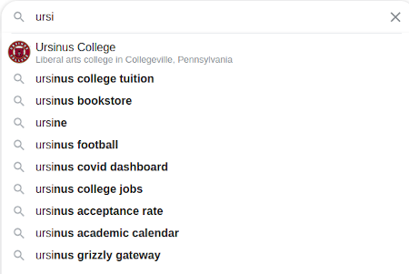

Assignment 2: Complexity Proofs And Autocomplete (40 Points)
Chris Tralie, heavily inspired from Princeton COS 226
Due Thursday 2/25/2021
- Overview/Logistics
- Part 1: Proofs
- Part 2: Autocomplete: Background
- Part 2: Autocomplete Programming Tasks
Overview / Logistics
The purpose of this assignment is to give you practice implementing efficient algorithms in python in the service of a cool application: autocompletion of text. You will ensure that your algorithms meet a particularly efficiency expressed in big-O notation. You will warm up for all of this by completing two proofs about efficiency of manipulating elements in different types of lists.
Click here to download the starter code for this assignment. You will be editing autocomplete.py
Learning Objectives
- Apply Big-O proof techniques to establish the amortized cost and average complexity of algorithms.
- Implement comparators to sort items in a custom way.
- Use binary search to efficiently find a range of items in an ordered list.
What To Submit
Please submit your file autocomplete.py to canvas, as well as your proofs either as pictures or a word/pdf document. Please also submit answers to the following questions on Canvas
- The name of your buddy, if you chose to work with one.
- Approximately how many hours it took you to finish this assignment (I will not judge you for this at all...I am simply using it to gauge if the assignments are too easy or hard)
- Your overall impression of the assignment. Did you love it, hate it, or were you neutral? One word answers are fine, but if you have any suggestions for the future let me know.
- Any other concerns that you have. For instance, if you have a bug that you were unable to solve but you made progress, write that here. The more you articulate the problem the more partial credit you will receive (fine to leave this blank)
Part 1: Proofs
In this section, you will prove a few propositions about lists, using what you know about Big-O notation and amortized cost. Please write these proofs up in a word processor, or hand write them neatly and take a picture to submit to canvas.
Doubling / Halving ArrayList (8 Points)
We saw in module 6 that one implementation of an ArrayList uses an array as an underlying data structure which doubles every time it reaches capacity. We then proved in module 7 that even though this doubling is expensive, that the amortized cost of a sequence of adds is O(1).
The drawback of this technique from a practical perspective is if we remove a bunch of elements, we suddenly have way more space than we need. So one might choose to modify that algorithm so that the moment fewer than half of the available space is used, the capacity halves. This certainly improves the space usage, but we unfortunately lose the O(1) guarantee for the amortized cost of a sequence of adds and removes. Describe a sequence of some constant times N operations, which is some combination of adds and removes, and prove that this sequence has a total cost of O(N2). Conclude that the amortized cost of this sequence of adds and removes is O(N). This is enough to show that our new technique fails to be amortized O(1) for all sequences, breaking our worst case guarantee.
In your proof, you should describe a sequence of operations and their cost. For example,
- Step 0: Start with an array with N elements and a capacity of N
- Step 1: Add an element, which takes some constant a times N steps, since I have to double the capacity. I now have a capacity of 2N for N+1 elements
- Step 2: Add an element, which takes some constant b time, since I don't have to touch the capacity. I am left with N+2 elements in a capacity of 2N
- ...
- Step N: ???
Hint: Try to get a sequence of halving and doubling to alternate in rapid succession. You can assume that if you don't have to double or halve, adding or removing is constant time. But if you do have to double or halve an array that has N elements, then it takes O(N) time to do that. (We already established this in modules 6 and 7, so you can take this as a given). Your proof should start by establishing an initial number of elements and capacity, and it should proceed by describing step by step adds or removes and the cost of each.
Can you think of a modified scheme that would free memory when needed but which might have better theoretical amortized runtime?. I won't grade this part for correctness, but I want to hear your thoughts because we're going to discuss something soon that is the best of both worlds for space and time, so I will grade it for completeness.
Average Complexity of Search in A Linked List (7 Points)
We know that the worst case time complexity of searching for an element of a linked list with N elements is O(N), since the element could show up at the end of the list. Prove that the average case is ϴ(N) ("big theta of N"); that is, assuming that it costs a constant a to walk a single step in the linked list and that T(N) is the average time to access any element in the list, prove both that T(N) is O(N) and T(N) is Ω(N) ("big Omega of N," which is the opposite of big O of N)
To prove that T(N) is O(N), you must find a constant c and a constant nc so that \[ T(N) \leq c N \text{ when } N > n_c \]
To prove that T(N) is Ω(N), you must find a constant c and a constant nc so that \[ T(N) \geq c N \text{ when } N > n_c \]
Hint
Consider a linked list with 5 elements, as below
To understand the average cost of finding an element, we need to look at the sum of the costs of finding all elements. In the above example, each search takes the following number of steps:
- chris: 1 (at the head already)
- celia: 2 (one step past the head)
- theo: 3
- layla: 4
- james: 5
The total over all of these is (1+2+3+4+5) = 15. Get the average by dividing by the number of possible elements, which is 5. 15/5 = 3, therefore the average cost over all possible searches is 3. See if you can extend this to an arbitrary number of elements N, with the help of the formula below:
\[ 1 + 2 + 3 + ... + N = \frac{N(N+1)}{2} \]
Part 2: Autocomplete: Background
Most of the interfaces we use in modern computing contain huge databases of text that can be used to predict what we're trying to type from just a few characters, as shown below:
|  |
The process is referred to as autocomplete. The query string is referred to as a prefix, and the word used to complete it is referred to as a term. For example, in the above Google search, a query prefix of "ursi" has an autocompletion of "ursinus college" (ignoring case). The possibilities should be sorted from most likely to least likely given some likelihood. For instance, some phones adapt by counting how many times people type a certain word and showing the most typed words first. In this assignment, since we lack such prior knowledge, we will simply be sorting in descending order by the number of times a word shows up, as counted by the google trillion word corpus.
In order for autocomplete to be practical, it has to be very efficient, not only because the databases of possibilities are often huge (the main one you'll be using in this assignment has 333,333 words), but because this has to be repeated over and over again as a person types and fills in more characters to the prefix.
In this assignment, you will implement an efficient version of autocomplete using binary search. We will see later in the course how to implement an even more efficient version of autocomplete using a data structure known as a trie, but for now, binary search on a sorted list will be quite a good, practical solution.
Part 2: Autocomplete Programming Tasks
You will be writing the bulk of your code in the class Autocomplete within autocomplete.py. The constructor accepts a string which is a path to a file containing a list of terms with a measure of their "importance." The first term database file you can use is words.txt, which contains the 1/3 million most frequently used English words based off of the google trillion word corpus, where "importance" is measured by the number of times that word was used. For example, "ursinus" is used 178,097 times, while "ursula" is used 976,724, so ursula would show up first for a prefix of "urs." There is also a file "cities.txt" that you can play with, where the "importance" of a particular city is measured by its population.
The terms are stored as a list of 2-element python tuples, where the first tuple element is the string and the second tuple element is its count. A tuple in python is simply an immutable list, meaning that it can't be modified after it's created, but all of the syntax for accessing its elements is the same as that of a list. The only syntactical difference is that a tuple is denoted by parentheses instead of square brackets. For instance,
would print out 178097. The terms are sorted in alphabetical order by specifying that the tuples should be sorted by their first element, with the following syntax:
You will use similar syntax later to sort the results of a query prefix in descending order of their count.
Finally, note that you can compare strings in alphabetical order with <, >, and ==. For instance
would print True, since "philadelphia" comes before "washington dc" alphabetically.
Part 1: First And Last Index (15 Points)
Assuming self._terms has been sorted in alphabetical order, fill in the _first_index_of and _last_index_of internal helper methods to return the first or last indices of the terms that contain a particular prefix. For instance, the code
should print 308595 308618, which makes sense since there are 333,333 words, and "urs" is towards the end of the alphabet. These indices also imply that there are 308618 - 308595 + 1 = 24 words total in the database that start with "urs". Your methods should each run in O(log(N)) time, where N is the number of terms in the database. Since, as we saw in module 8 there are many pitfalls with infinite loops with binary search, you may wish to test some of your code on sorted lists with repeat numbers first (like the ones in that module) to make sure it's working properly, and then ensure it also works with words.
Part 2: Autocomplete List (5 Points)
Fill in the method all_matches, which should return a list of m matching terms from the database, sorted in descending order of importance (the second term in the tuple). The total time complexity of this method should be O(log(N) + m log(m)). You should use the python method sorted, as in the constructor, and this will have a complexity of O(m log(m)) for this step.
As an example, suppose you run the following code to query the database with the word "at":
It should then print out the following
For an example with the cities.txt database, suppose we query the city "College"
It should then print out the following
We are one of only two Collegevilles in the world, and the other one has a slightly lower population!
Part 3: Empirical Performance (5 Points)
If you've implemented binary search properly, then the loop (or recursion, depending how you implemented it) should not execute more than ceil(log2(N))+1 times for N terms in the database. Create a list member variable that stores the number of repetitions of the loop or recursion that happen in _first_index_of and _last_index_of for every query, and perform a bunch of random queries. Then, plot a histogram of that list with the plt.hist(listname) command and be sure that none of the counts exceed ceil(log2(N)+1).
NOTE: In the list of 333,333 words, ceil(log2(N)+1) = 20. There is a strong analogy with the 20 questions game, where someone asks 20 yes or no questions and is able to narrow down pretty much any noun from that.